The Realms of Oblivion
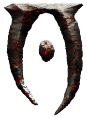
The letter "O" in the Daedric Alphabet, a representation of the realm
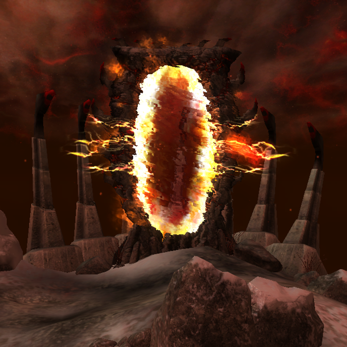
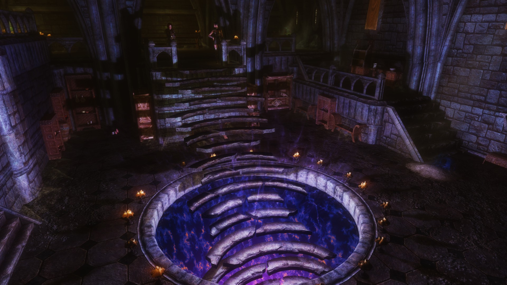
Two examples of entrances to Oblivion in the mortal world
Oblivion is split up into various sub-realms, controlled by a master who is usually a Daedric Lord- though there are exceptions to this. When talking about the sub-realms, it gets very confusing. "Oblivion" as a whole is simply part of the grant universe of Aurbis- and is nothing more. Consider Oblivion to be parallel to the Solar System, and the various realms to be the planets of that solar system- as numerous as they are.
The Realms of Oblivion- Greater
Moonshadow
Attribution's Share
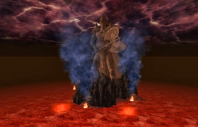
The Fields of Regret

Apocrypha
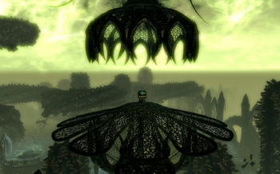
Hunting Grounds
Ashpit
Deadlands
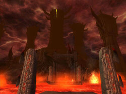
Spiral Skein
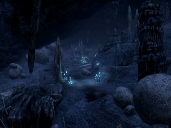
Colored Rooms
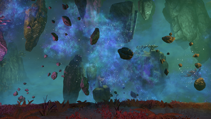
Coldharbour
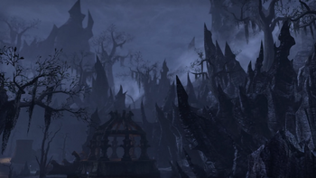
Scuttling Void
Evergloam
The Pits
Myriad Realms of Revelry
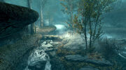
Shivering Isles
Quagmire
The Realms of Oblivion- Lesser
Gaiar Alata
Soul Cairn
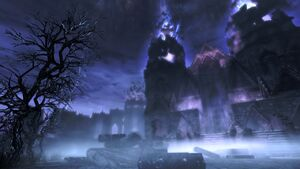
No personal data is collected by this website. No cookies are stored by this website. All rights to the Elder Scrolls franchise are reserved to Bethesda Studios. This is a non-profit fan page.